×
常用邮箱/手机号
密码
自动登录
忘记密码？
没有账号？
立即注册
或
GameLoft
首页
游戏分类
单机游戏
网络游戏
手机游戏
热门导航
个人中心
图片赏析
搜索
登陆
注册
《使命召唤11》的游戏背景被设定在未来的战场上，科技和战术已经达到了一个全新的水平，给玩家带来非凡的游戏体验。奥斯卡金像奖得主凯文·史派西将扮演游戏主人公乔纳森·艾恩司（Jonathan Irons）——世界上最强大的人之一。
进入使命召唤游戏讨论区>>>
系列下载
更多>>
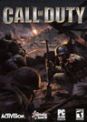
使命召唤1
Call Of Duty
【游戏简介】
《使命召唤1》，是一款以二战为背景的第一人称射击游戏，采用了强化过的重返德军总部之游戏引擎。这款游戏模拟了盟军士兵在二战时的作战情形。
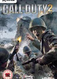
使命召唤2
Call Of Duty 2
【游戏简介】
《使命召唤2》采用全新的3D引擎设计，让玩家有亲临战场般的震撼，玩家还能使用烟雾弹，或是靠烟雾因引来隐匿行踪，以及支援各种气候变化、晨昏光影变化而产生的视觉隐匿效果...
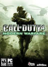
使命召唤4现代战争
Call Of Duty 4 Modern Warfare
【游戏简介】
《使命召唤4：现代战争》已抛弃经营已久的二战题材，另起灶炉的是现代战争。“现代战争”是《使命召唤》系列的里程碑式作品，游戏以真实的战争、出色的关卡、逼真的狙击关...
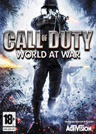
使命召唤5
Call of Duty World at War
【游戏简介】
与《使命召唤4》不同，《使命召唤5：世界大战》不但由曾开发《使命召唤3》的Treyarch负责制作，而且游戏的战场也回到了系列之前的第二次世界大战时期，游戏将围绕发生在...
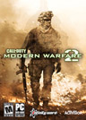
使命召唤6现代战争2
Call of Duty Modern Warfare 2
【游戏简介】
《使命召唤6：现代战争2》是《使命召唤4：现代战争》的直接续作，将沿袭前作的战役剧情背景设定。同时也是使命召唤系列的第6部正式作品。
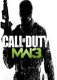
使命召唤8现代战争3
Call of Duty:Modern Warfare 3
【游戏简介】
使命召唤8：现代战争3(Call of Duty8)》的游戏背景将延续前作（MW2）设定，即核弹摧毁全美C3I系统，美国本土遭俄罗斯侵犯。但游戏不会像《国土防线》那样刻画占领区的斗争。
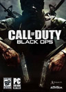
使命召唤7黑色行动
Call of Duty World at War
【游戏简介】
《使命召唤7黑色行动》游戏背景故事剧情设定在了上世纪后期的美国越南战争时期，游戏主要描述了战争期间的一个名称为Studies and Observations Group的组织...
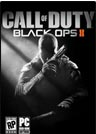
使命召唤9黑色行动2
Call of Duty Black Ops2
【游戏简介】
《使命召唤9：黑色行动2》由Treyarch开发。是《使命召唤7：黑色行动》的正统续作。本作将带领玩家进入未来战争。
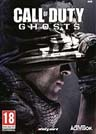
使命召唤10：幽灵
Call of Duty 10: Ghost
【游戏简介】
《使命召唤10：幽灵》启用了全新引擎虚幻4，画面大幅度提升，但艺术风格回归《使命召唤4：现代战争》的朴素风格...
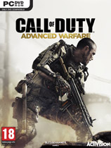
使命召唤11：高级战争
Call of Duty 11
【游戏简介】
《使命召唤11：高级战争》由《使命召唤8：现代战争3》的合作开发商Sledgehammer Games打造，成为整个游戏系列以次世代水平开发的第一款游戏。...
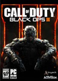
使命召唤12：黑色行动3
Call of Duty: Black Ops 3
【游戏简介】
《使命召唤12：黑色行动3》的故事背景将发生在未来世界，社会所担心的诸多问题已成为了现实。...
使命召唤5
更多>>
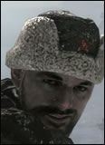
姓名:迪米特里 彼得连科
生日:1923年
年龄:22岁(死亡时)
国际:苏联
使命召唤5的另一位主角，全名Dimitri Petrenko,是和雷泽诺夫一起出生入死的伙伴， 在5代里，和雷泽诺夫一起攻入柏林，并把苏联红旗插到了议会大厦的楼顶上
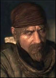
姓名:维克多·雷泽诺夫
国籍:苏联
军衔:中士、大尉
生日:1913年
出入登场于第五部《使命召唤:战争世界》,第二次于第七部《使命召唤:黑色行动》 中回归。雷泽诺夫被设定为苏联军队中的超级战士，参加过二战
姓名:洛克
军衔:海军士官
国籍:苏联
PBY Catalina反潜侦查机的武器操作员，只在“黑猫”一个关卡中出现。他所在的小分队进行了一次对冲绳的空袭，之后营救了一个被击垮的美军舰队的幸存者。
使命召唤6
更多>>
姓名:约翰·普莱斯
国籍:英国
是贯穿整个cod系列的重要人物，各代游戏之间形象大致相同。 另据消息称，IW声明现代战争系列中的普莱斯是二战系列的普莱斯的孙子 。在古拉格集中营被救出，在大结局中，普莱斯救了肥皂一命。
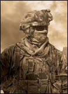
姓名:加里·桑德森
绰号:小强
军衔:中士
“小强”和肥皂中士有很多相似之处，不仅都是有绰号的中士，并且在任务中都曾 出现险些跌入深渊的危机关头并被长官救起的背景，他最后被谢菲尔德将军杀害后焚尸
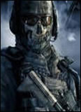
姓名:西蒙·莱利
绰号:幽灵
军衔:中尉
战术高超，能在短时间内击毙多名敌人且明白敌人的战术。当队友负伤的时候，会抛下 武器，冒着危险去挽救队友的生命，被视为是4代中盖兹的化身。在安全屋行动中和小强 一起被谢菲尔德杀死。
使命召唤7
更多>>
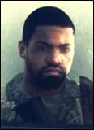
姓名:约瑟夫·鲍曼
国籍:美国
一名出色的神枪手，能说一口流利的西班牙语，精通爆破。17岁时加入美国海军，他强大适应力和 驾驶技术使战友刮目相看。从新手训练营走出来之后，他立即申请加入水下爆破队，以破纪录的方式 通过了苛刻的资质测试。
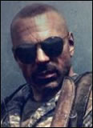
姓名:贾森·哈德森
国籍:美国
在执行任务时总能发挥出天才般的智商，是一名出色的 军师和任务协调官。因此考虑到他的领导和危机管理能力， 他将会持续受到重用。正如一名同事所说:“jason能言善辩 ，他一旦开口你就只有听的份了。”
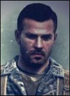
姓名:亚历克斯·梅森
国籍:美国
在阿拉斯加出生、长大。由于他家乡与俄罗斯共产党靠的 很近，导致他比大多数美国人更早的感受到冷战的威胁。 这是他拥有强烈反共理想并最终加入usmc的原因。 成为机构一员后立下不少战功，并于机构同事打成一片。
使命召唤8
更多>>
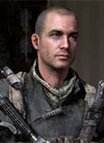
姓名：尤里
国籍：俄罗斯
真名不明，尤里90年代曾经是阿尔法小组的成员，年轻而爱国，他的理想主义使得扎卡耶夫和马卡洛夫颇为赏识，后因受不了马卡洛夫的极端行为背叛。最后一役为普莱斯杀马卡洛夫争取了时间和机会但不幸牺牲。
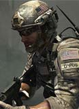
姓名:桑德曼
国籍:美国
三角洲特种部队成员，带领寒霜完成各种任务。与普莱斯，肥皂，幽灵认识。后和普莱斯，尤里，特拉克，格林奇一起救出俄罗斯总统和总统的女儿，但最后为了掩护队友撤退而未登机阵亡。
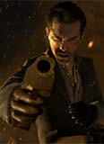
姓名：马卡洛夫
国籍:未知
MW3中最大的反派，是俄罗斯极端民族主义组织领袖，MW1中扎卡耶夫的追随者。劫持了美国副总统和俄罗斯总统会谈的专机，绑架了俄罗斯总统和总统的女儿，杀死了肥皂和尤里。最后在迪拜被普莱斯勒死。